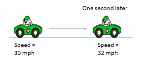
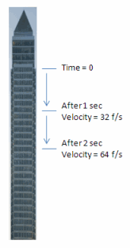
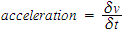

If an object is moving with a constant velocity, then its acceleration is zero, since the velocity never changes.
But imagine a car going along at 30 mph (miles per hour). When we check the speed one second later, we find the speed is now 32 mph. So in that one second, the speed increased by 2 mph. The car is therefore accelerating - its speed is increasing by 2mph every second.

Formally, we say its acceleration is 2 miles/hour per second, or
(Think of the slash "/" as "per". So read this as "acceleration is 2mph per second")
Cars are often judged by how long it takes to accelerate from 0 to 60mph. Most cars can do this in about 10 seconds. So they can accelerate at the rate of 60mph every 10 seconds. Therefore, in one second they accelerate by 6 mph. So we can say
If the car above is braking, we say it is decelerating. But in mathematics and physics we usually say it has a negative acceleration. So a car that is slowing by 4mph every second has an acceleration of -4mph/sec

If we drop any object, it falls to the ground at a speed that is continuously increasing. In other words, they have a constant acceleration. It turns out that on Earth, this acceleration is approximately 32 feet per second every second (regardless of the object's weight, to the surprise of many).
So any object falling freely under the influence of Earth gravity accelerates at the rate of 32 feet per second every second. This acceleration is commonly called 'g' in physics, so we can write this formally as
This is usually further abbreviated by combining the last two items as
In calculus, the acceleration is found as being the derivative of velocity. In other words an object whose velocity is v has an acceleration of

which is read as "dv - dt", and is the rate of change of the velocity v, with respect to time.The big advantage of using calculus to solve speed and acceleration problems is that the velocity can be written as an expression, not just a fixed number, so very complex problems can be solved where the acceleration is not constant.
For more, see Calculus: Equations of motion.